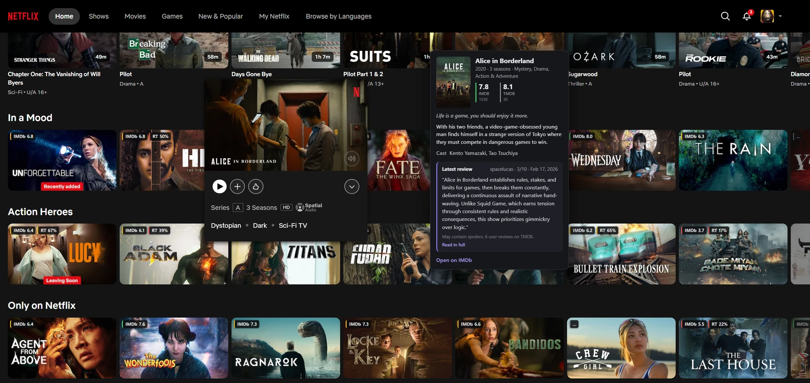
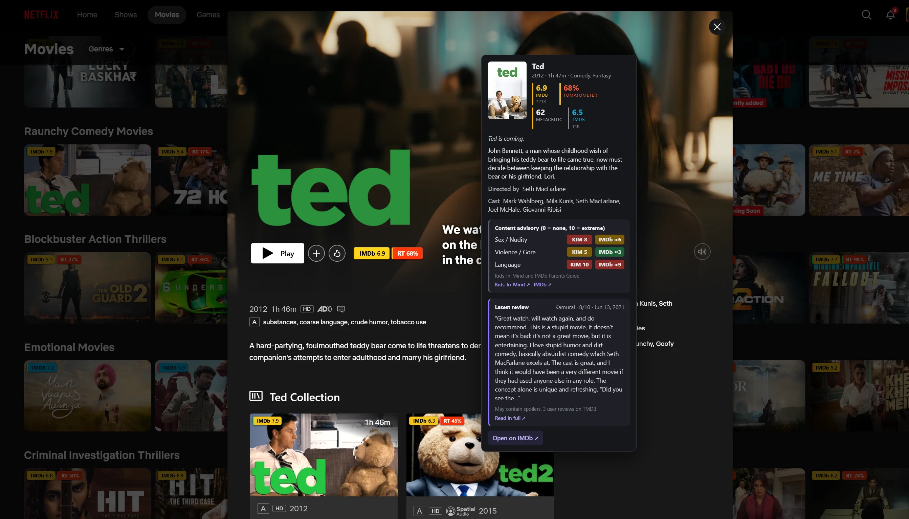
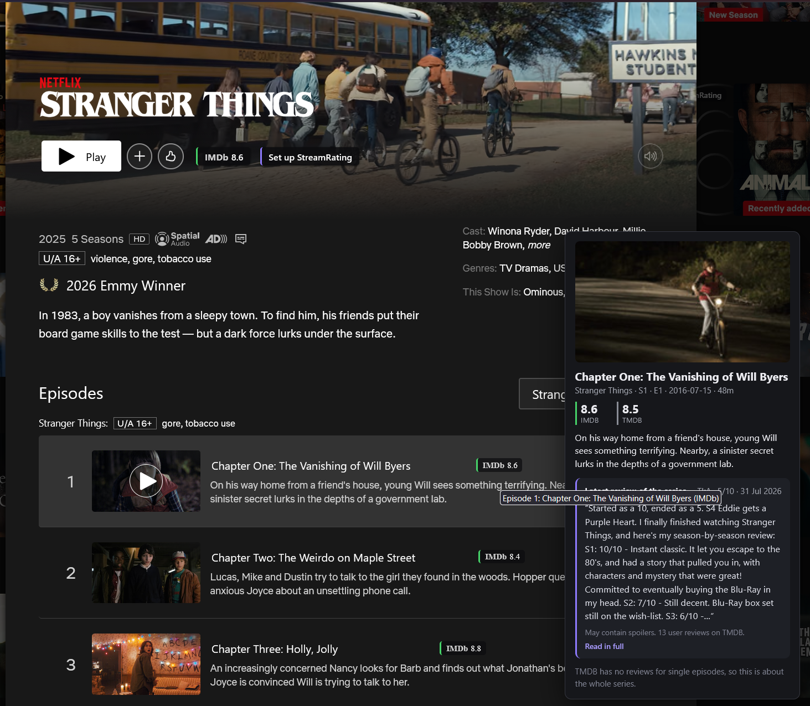
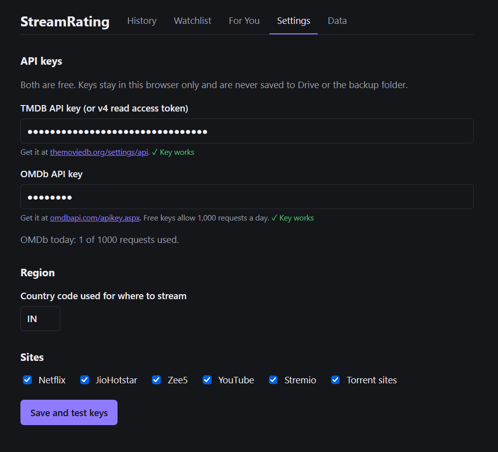

Know what's worth
watching.
StreamRating puts IMDb, OMDb, TMDB and Rotten Tomatoes ratings right on Netflix and YouTube, with review summaries, content advisories, watch history and recommendations. No more opening another tab to decide.
A star takes a second and helps other viewers find it.




Features
The rating is already on the page
Everything shows up where you are browsing, so choosing something to watch takes a glance.
Ratings on thumbnails
IMDb, TMDB and Rotten Tomatoes scores on Netflix rows, the home billboard, More Like This tiles, title pages and episodes.
Review summaries
Hover a title for its synopsis and a short summary of the latest review, with spoilers flagged.
YouTube too
Films on YouTube Movies & TV, and videos titled as a film, trailer or teaser, get a badge. Other videos get none.
Content advisory
Sex/nudity, violence/gore and language out of 10, from Kids-In-Mind and IMDb's Parents Guide, in the hover card.
Watch history
Keeps a history and a watchlist of what you have seen and what you want to see.
For You
Recommendations based on the ratings of the things you have watched.
Content advisory
Know what's in it before you press play
Open a hover card and StreamRating scores the title for sex and nudity, violence and gore, and language, each from 0 (none) to 10 (extreme), using two independent sources.
- Kids-In-Mind (
kids-in-mind.com) gives its own 0 to 10 score for each of the three categories, written by its reviewers for films it has covered. It is the more precise of the two. - IMDb Parents Guide rates each category None, Mild, Moderate or Severe. StreamRating shows these as 0, 3, 6 or 9, marked with ≈ because they are rougher than Kids-In-Mind's numbers.
- Colours run green (3 or less), amber (4 to 6) and red (7 or more), so a glance is enough. Hover an IMDb score to see how it was converted.
- If only one source has the title you see just that one. A title neither has shows "No content advisory found".
Example, Ted (2012): Kids-In-Mind gives Sex/Nudity 8, Violence/Gore 5 and Language 10, while IMDb's Parents Guide comes out at ≈6, ≈3 and ≈9. The two agree on the picture, and the card links to both pages.
How it works
Set it up once, then just browse
StreamRating looks ratings up through two free APIs, so you bring a key for each.
Get two free keys
A TMDB key and an OMDb key. Free OMDb keys allow 1,000 requests a day.
Paste and test
Open Settings, paste the keys and press Save and test keys. Each shows a green tick when it works.
Open Netflix or YouTube
Badges appear on thumbnails and title pages. Hover for the details.
Your keys never leave the browser
- Keys are stored in this browser only
- Never saved to Drive or the backup folder
- Pick the region used for "where to stream"
- Switch sites on or off in one place
Install
Up and running in a few minutes
Firefox users can install it from addons.mozilla.org. For Chrome, build it from source (you need Node.js).
- Firefox: add it from addons.mozilla.org and skip to the last step. Or build from source:
- Get the code and build it
git clone https://github.com/Manish-404/StreamRating.git cd StreamRating npm install npm run build # Chrome npm run build:firefox # Firefox
- Chrome: open
chrome://extensions, turn on Developer mode, choose Load unpacked and pick.output/chrome-mv3. - Firefox: open
about:debugging#/runtime/this-firefox, choose Load Temporary Add-on and pickmanifest.jsonin.output/firefox-mv2. Needs Firefox 140 or newer. - Add your keys in the extension's Settings tab, then open Netflix.
Privacy
Your data stays in your browser
History, watchlist and settings are stored locally. The titles you browse are sent to TMDB and OMDb to look up their ratings, and to Kids-In-Mind and IMDb for the content advisory when you open a hover card. Nothing else leaves the browser, and there is no account and no tracking.
FAQ
Questions
Is it free?
Yes. The extension is free and open source. The TMDB and OMDb keys are free too; OMDb's free keys allow 1,000 requests a day.
Which sites does it work on?
Netflix, and YouTube for films, trailers and teasers. More streaming sites will be added as their adapters are written.
Where do the ratings come from?
IMDb ratings via OMDb, plus TMDB and Rotten Tomatoes scores. Review summaries come from TMDB reviews. Content advisories come from Kids-In-Mind and IMDb's Parents Guide.
Why does it need my own API keys?
So the extension has no server and no shared quota. Your lookups go straight from your browser to the rating services.
Is it affiliated with IMDb, Netflix or Rotten Tomatoes?
No. StreamRating is an independent project. Those names belong to their owners.
Give it five stars.
If StreamRating saves you a few searches, a GitHub star is the best thank you. It also tells me it's worth building more.